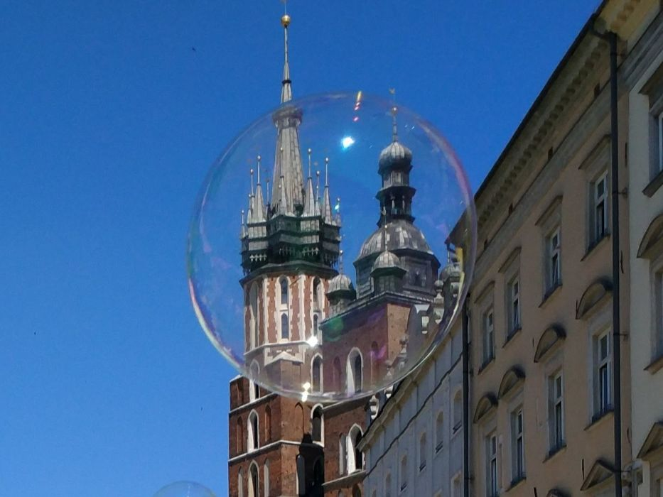
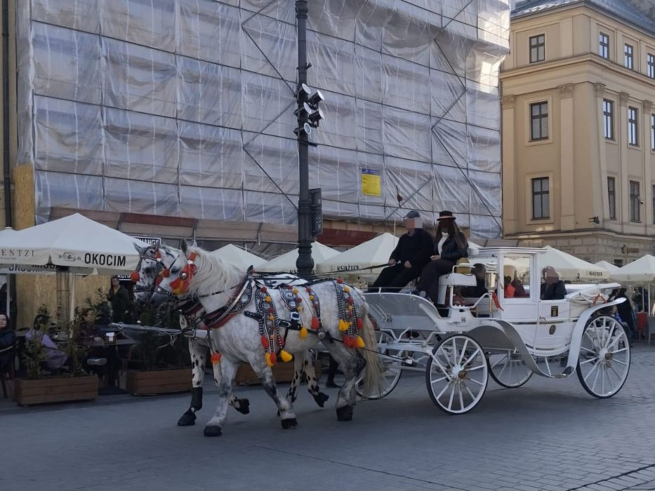

Krakowskie tradycje

Hejnał Mariacki
Hejnał Mariacki jest niewątpliwie jedną z najbardziej znanych i ważnych tradycji Krakowa. Jest on grany codziennie o godzinie 12:00 z Wieży Mariackiej. Jest to związane z legendą o ataku Tatarów na Kraków, podczas którego trębacz na wieży chciał ostrzec mieszkańców przed niebezpieczeństwem jednak przypłacił za to życiem - tatarska strzała przeszyła mu gardło.
Szopki krakowie
Jest to trwająca od XIX wieku tradycja budowania w okresie Adwentu szopek bożonarodzeniowych. Co roku w pierwszy czwartek grudnia pod pomnikiem Mickiewicza na rynku odbywa się konkurs na najpiękniejszą szopkę.

Previous
Next